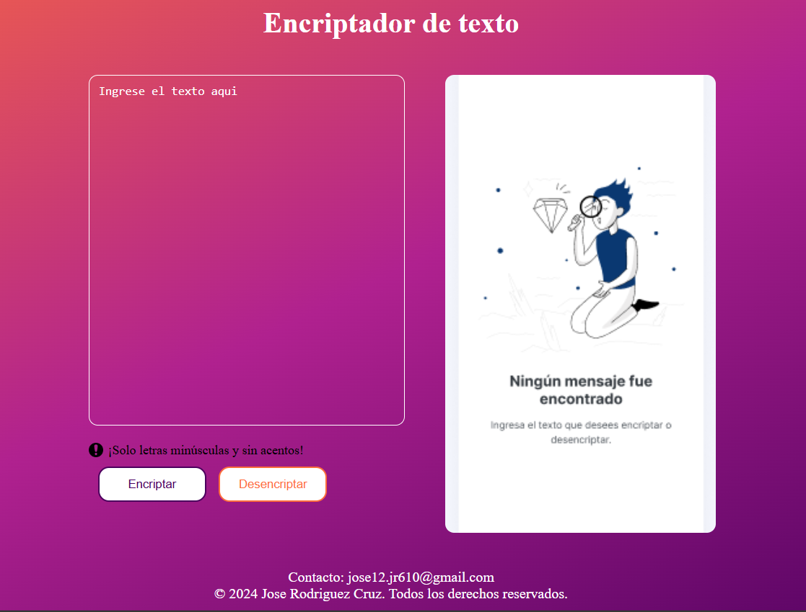
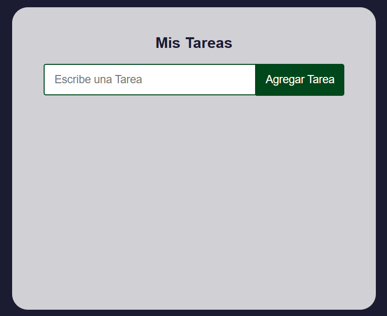
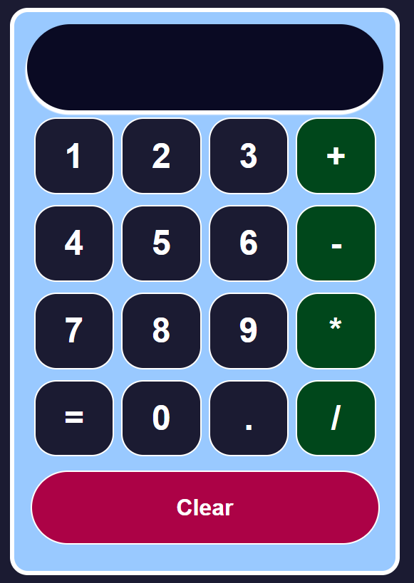

Encryptor
El Encriptador de Texto es una aplicación web interactiva que permite a los usuarios encriptar y desencriptar mensajes utilizando reglas de sustitución específicas.

To Do List
Este es un proyecto simple de una aplicación de lista de tareas construida con React. La aplicación permite agregar, eliminar y marcar tareas como completadas. Está diseñada para ayudar a gestionar y organizar tareas de manera efectiva.

Calculator
Este proyecto es una calculadora simple hecha con React que permite realizar operaciones matemáticas básicas. La calculadora cuenta con una interfaz interactiva y amigable, y utiliza la librería mathjs para evaluar las expresiones matemáticas ingresadas por el usuario.